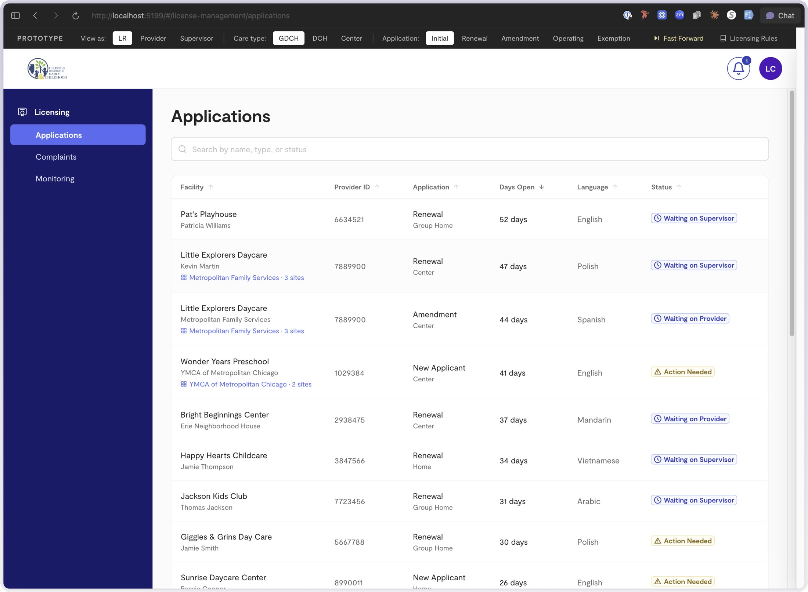
The quick skim
Everything that matters, in about ninety seconds.
Problem
IDEC oversees 27,379 licensed and license-exempt providers through a process built on mail, folders, and a 1980s mainframe. A renewal moves as hundreds of pages, 75% of applications arrived incomplete, and ninety-day windows were tracked by hand. We arrived as IDEC was being formed out of three separate departments, so none of this had ever been documented.
Task
Design the digital service replacing it, across five personas and nine or more workflow modules that had been built separately and diverged, without reinterpreting regulation the agency is legally bound by.
Action
Mapped 37 process flows with licensing staff. Found ten interaction patterns that cover all nine modules. Built the working prototype in code (150 files, 69 routes, 452 commits), with the design system encoded as rules an AI enforces at generation time.
Result
Launching May 2027. The provider portal is built and through UAT; later phases are specifiable as configuration rather than new design. A PM authored 117 of the prototype's 452 commits, changing who could contribute without changing who was accountable.
Three things that made this harder than it looks
The design process changed underneath the project
We started under the process we'd always used. Midway, the company went through an AI transformation that rethought how we do design and discovery, so one project ran under two ways of working.
Zero to one, on an aggressive timeline
Nothing existed to build on: five personas, nine or more modules, rules set by statute, against a schedule that assumed a settled process to digitize.
The client organization didn't exist yet
IDEC was still being stood up, so it wasn't always clear who internally owned a given decision, and an answer could change as the org took shape around it.
Understanding a process nobody could see all of
A provider mailed a paper application to a regional office. Staff keyed it into a legacy mainframe by hand. A licensing rep worked the case out of a physical folder; background checks, fire inspections, and monitoring visits each lived in a different place. None of it moved as a form, it moved as a package: floor plans, insurance, radon and lead results, staff records, a compliance record dozens of pages long. A provider who left one document out didn't get a validation error. They got weeks.
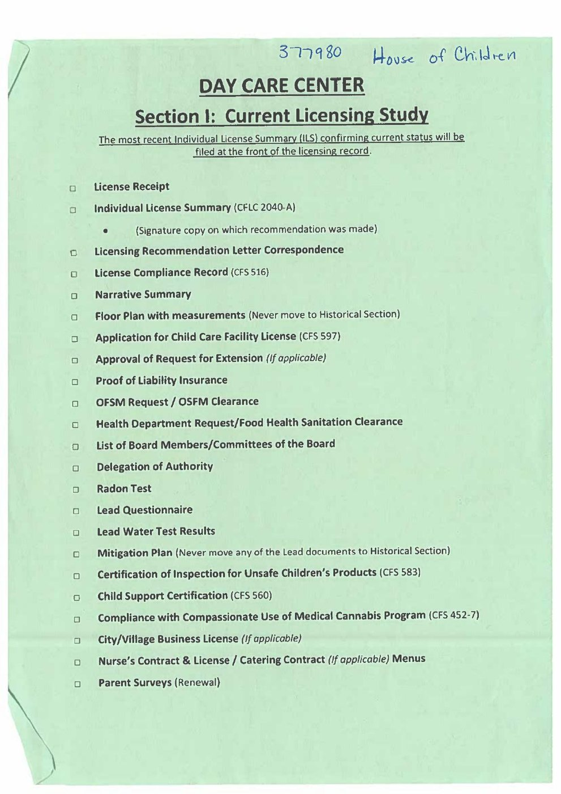
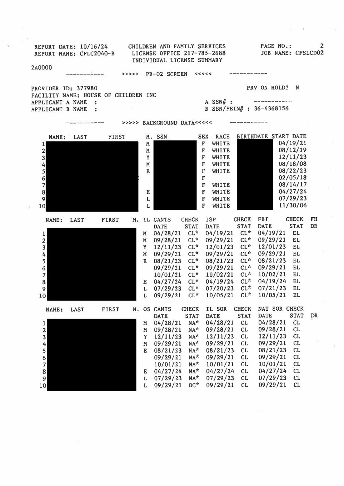
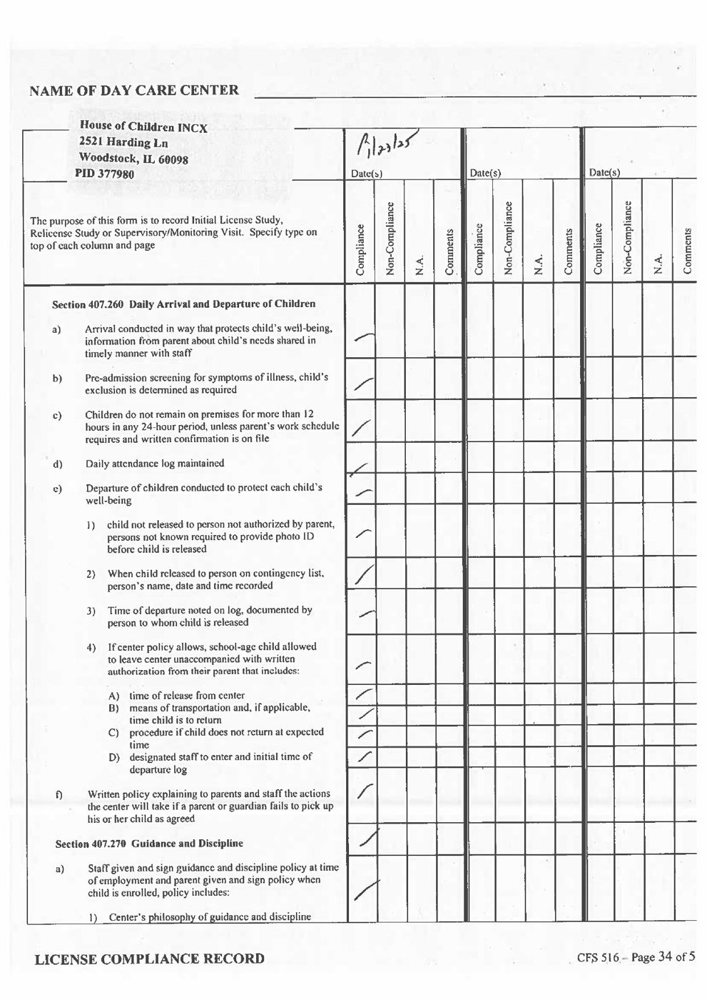
We arrived while the agency itself was being assembled: Illinois consolidated early childhood staff from three departments into IDEC, and licensure formally moved over from DCFS on July 1, 2026, inside the window this work ran in. So there was no settled process to digitize; these workflows had never needed to be documented before.
Licensing is organized into four regions. A licensing representative typically holds about 75 open cases at once, each of which can be in a different module at a different stage. Access came in three shapes: standing one-on-ones with two IDEC licensing leaders, two week-long sessions in Chicago with regional staff, and continuous UAT with the subject-matter experts closest to each piece of work. Out of it came 37 process flows covering the full lifecycle, which for several workflows were the first written account of how the work actually happens.
"These providers are business owners. It's their business, and we want them empowered to run it, which means really understanding the rulebook that governs it, rather than waiting for us to tell them."
IDEC stakeholder
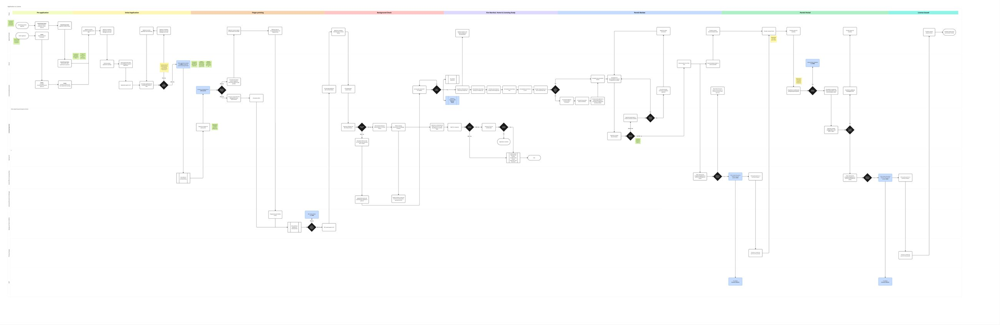
What I did, and what I didn't own
Sole designer on the initiative: I facilitated the working sessions, owned the information architecture and interaction design across five personas and nine or more modules (including the status model, defined with engineering as a state machine), built the interactive prototype in production code, authored the design system as enforceable rules rather than documentation, and owned every word in the product since there was no content designer.
What I didn't own was policy interpretation. Every regulatory rule traces to an IDEC subject-matter expert, and where the rules were ambiguous I escalated rather than resolved. Engineering owns the production data model and the shipped code. When a wrong interpretation becomes the agency's official position, a designer who quietly decides what a rule means is a liability, not an asset.
Deciding what was actually broken
I expected the problem to be forms. A license isn't a document, it's a state that many parties change over time, and paper hid that by giving each participant their own copy. Digitize it and you have to answer a question paper never had to: whose version is true, and what happens to everyone else's view when it changes.
Five goals came out of discovery: make it obvious whose move it is, make an incomplete application impossible to submit, make the regulation usable without replacing it, protect the reviewer's judgment, and cover every combination of persona and module without designing every combination.
The prototype was the design tool, the state machine was the contract
Once a license became a state rather than a document, the next artifact wasn't a screen. I worked with engineering to write the state machine: the named states a case can be in, who can move it between them, and what each role sees at each point. Design owned the vocabulary and transitions users experience; engineering owned how it was enforced.
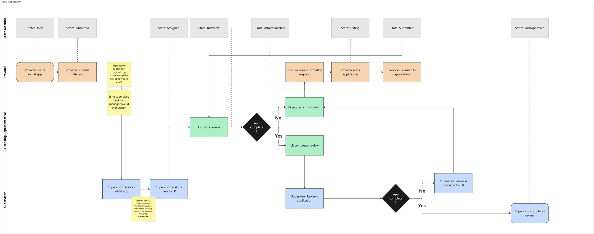
Everything after that was built in code with Claude Code rather than in a design tool, which changed what I was willing to throw away. I built the full corrective-action branching workflow and deleted it. Built the scheduling handshake and deleted it. Built four versions of the staff compliance surface and kept the fifth. Each was cheaper to make in code than to argue about in the abstract.
Working in code paid off four ways: SMEs could test their own scenario live, they caught edge cases a static frame hides, time became demonstrable (deadlines passing, windows closing), and engineering estimated and built from the real thing. The surprise was governance: because the design system was encoded as rules the AI enforces at generation time, the initiative's PM authored 117 of the prototype's 452 commits, on-system, which changed who could contribute without changing who was accountable.
This worked because I can build, and because the prototype shared a stack with production. Neither is true everywhere. It's also worse than Figma at pure visual exploration, and a working prototype anchors people harder than a sketch does: it's easy to mistake "it exists" for "it's right."
Ten patterns covering nine modules
The rules genuinely differ by provider type, unifying everything erases differences that are statutory; leaving each workflow alone guarantees drift. The rule I settled on: the container, the status vocabulary, and the correction loop are shared. The fields, the population, and the responsible party vary.
Every reviewable thing moves through the same states and uses the same review card, comment thread, and resubmission cycle. A rep carrying 75 open cases across every module learns one review interaction and has learned all of them. Accepted-but-not-fixed items became outstanding conditions, a named object that follows the provider onto their permit instead of a free-text box the rep retypes.
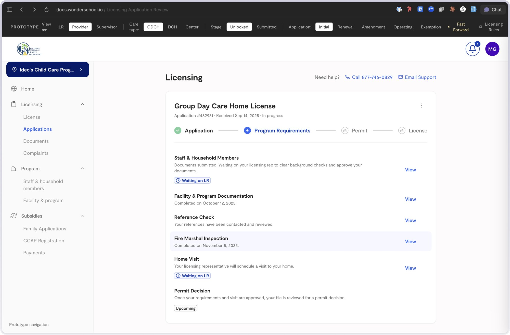
A locked step is where you learn what's coming
The regulations are the documentation, so predictably most people wait to be told instead, and the rep absorbs the difference as hand-holding. So every step a provider can't act on yet still explains itself: what it is, what will happen, and what they'll be asked to do. Every question answered in place is also a phone call a rep doesn't take.
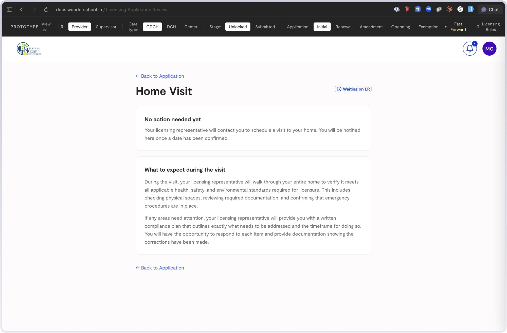
The rulebook stays the authority
The software cannot restate a rule into a new meaning, if the interface implies an interpretation, that becomes the agency's position. So each requirement breaks into four moves: a conditional question decides whether it applies, plain language states the obligation, the regulation sits one click away quoted and cited, and the upload asks for exactly the artifact that satisfies it.
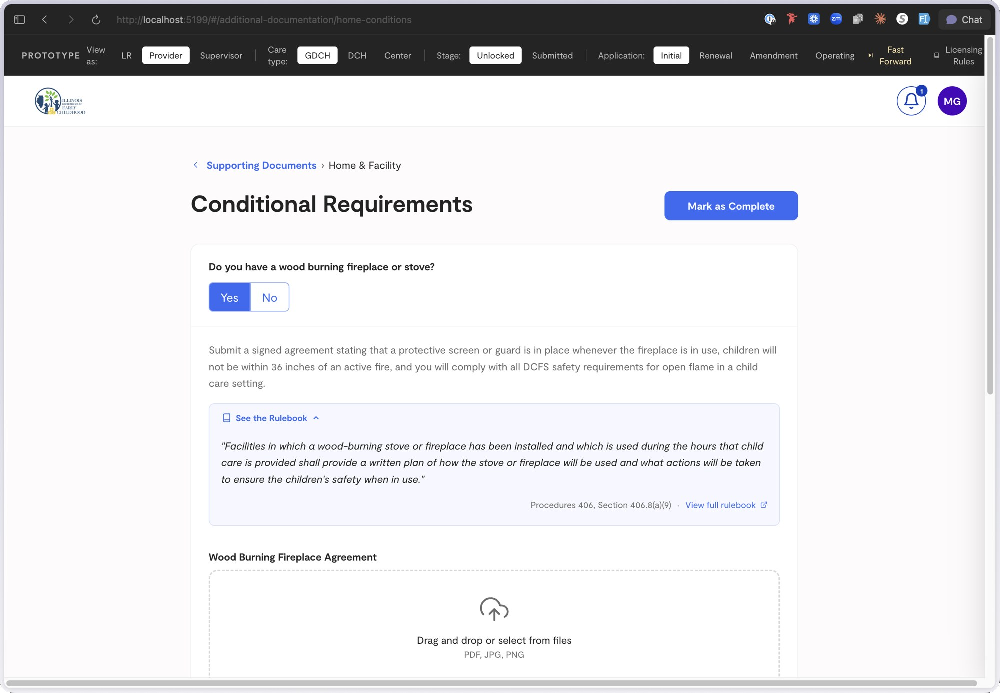
Linear enough to show state, lateral enough to build a case
A licensing rep's output is a recommendation that has to hold up years later. Phases answer "where is this?" identically for all roles, but building the case needs the current phase plus complaint history, prior violations, and the last renewal. So the timeline is the spine and the tabs are lateral access: the rep reads state down the left, works the current phase on the right, and reaches history without leaving the case.
The status vocabulary doesn't describe the record, it says whose court the ball is in. Every state resolves to an actor: the provider, the licensing rep, or an agency the platform doesn't control. That's what makes one object legible from three directions at once.
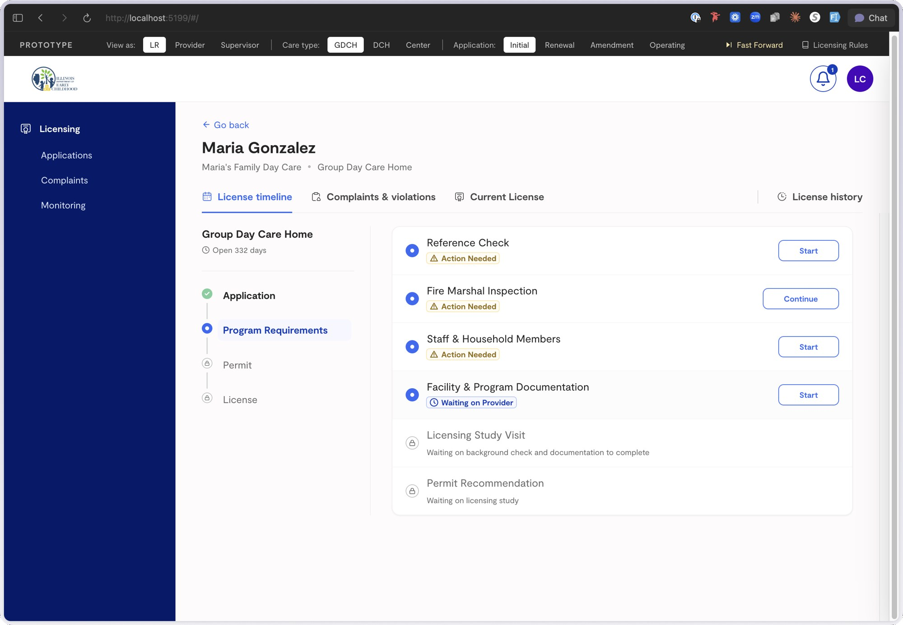
Designing for a process I couldn't change
The platform already holds the documents, so a whole class of site-visit questions is answerable before anyone knocks on a door. The efficient design deletes those questions. The SMEs didn't want them deleted, their process has held up in audits for decades, and removing verification steps asks them to trust software with the part of the job they're personally accountable for. I made the case twice and lost it, and I think they were right to hold: the cost of being wrong here isn't a bad experience, it's a program that shouldn't have been licensed.
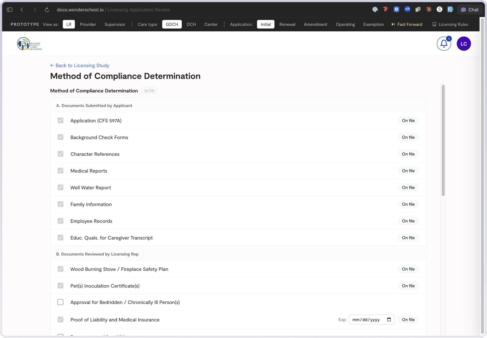
So I designed the middle position. Verified items stay on the checklist and carry an "On file" marker: the rep sees the item, sees the system has it, and can open it, but nothing is waiting on them. And I took the checklist seriously: a first home visit is 568 items across 24 sections, and it deserved the attention a core surface gets, section-level counters, every item carrying its citation, bulk marking for sections that are routinely clean.
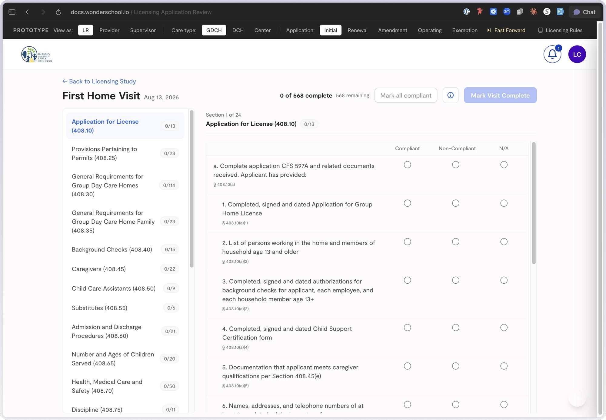
The trade-off is deferred, not settled. Once reps have worked real cases and watched the states hold, the argument for removing those questions gets made by evidence instead of by me: a slower way to win and a more durable one.
Designing against a system that is going away, but not yet
Background checks are legally recorded in the legacy mainframe, and that stays the system of record for now. Building around it as if permanent bakes a dying system into the interface; designing as though it's already gone gives reps a product that lies about where the truth lives. So I modeled the requirement rather than its source: a person carries a background-check requirement regardless of whether the answer arrives from a mainframe today, an integration tomorrow, or a different agency entirely.
The unglamorous half: the platform can't write to the legacy system, so it does everything up to the boundary and stops, assembles the record the rep needs, puts a copy control on every field, and offers the same task two ways, open the legacy system directly, or hand it to clerical, then captures the ID it generates and carries it forward to the next step.
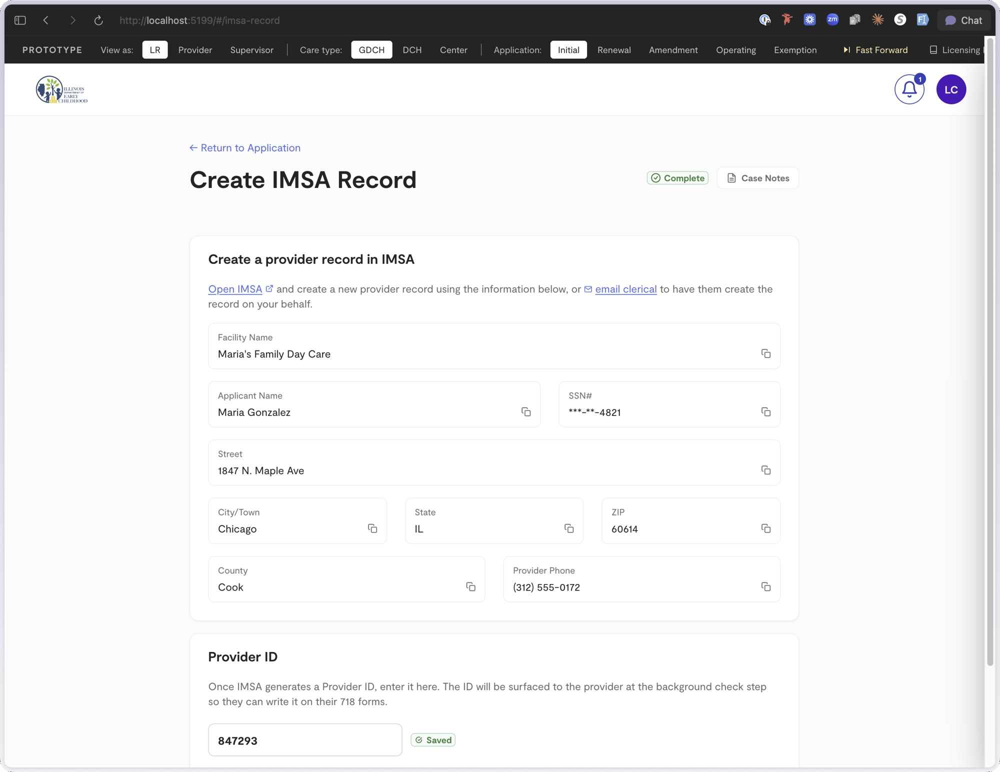
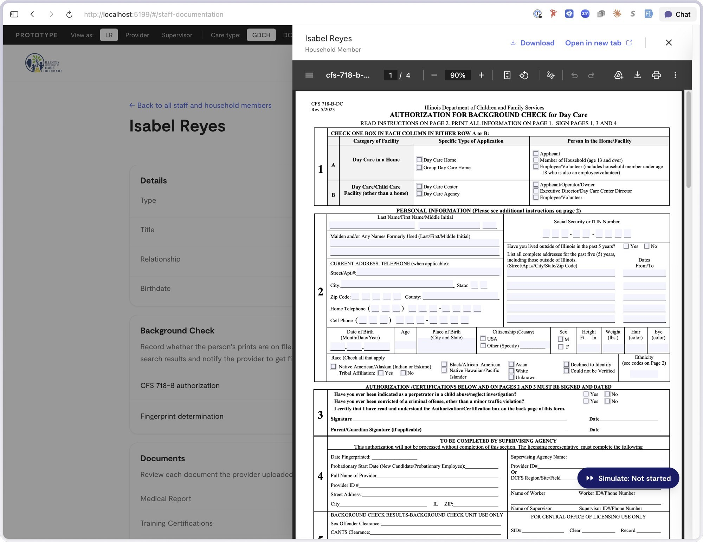
What changed after I was wrong
My first corrective-action design made the rep choose up front how each non-compliant item would be verified: complete and unusable, because it forced a decision the rep doesn't make at that moment. I replaced it with three states per item and one discretionary action, at the cost of a structured audit trail. The staff surface got rebuilt four times because I designed page by page before settling the taxonomy the system actually needed: a person who carries requirements independent of which page they appear on.
"I click download inside the purple box. I filled out some of the form. I could not figure out the upload exactly."
Licensing representative, UAT walkthrough
Nothing on the screen was wrong; what was missing was the return leg of a round-trip requirement, download a form, fill it out, bring it back. Every point where a process leaves the system and comes back is a seam, and a seam has to explain both directions.
How I got a room of experts to agree
Licensing staff outrank the designer on subject matter by a wide margin, so I stopped presenting design and started presenting their process back to them. The 37 process maps were the shared object: staff will correct a flow diagram fluently and will never correct a wireframe. With engineering the shared object was the state machine. There was no content designer on this initiative, so I owned the words, and in a system like this the words are the information architecture. "Outstanding condition" instead of a free-text box is the whole of the corrective-action rework. One shared status vocabulary instead of nine is the whole of the pattern system.
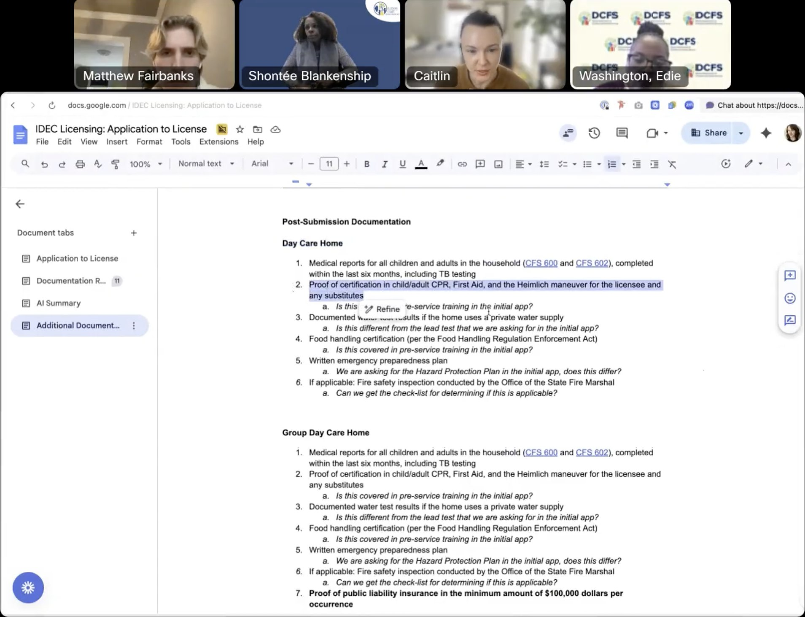
Answering the 75% problem, cause by cause
Three quarters of applications arriving incomplete was never one failure. It was five, each with a specific mechanism designed against it: providers didn't know which requirements applied (a conditional question now decides), couldn't tell whether they were done (completeness is enforced, not reported), didn't understand what was being asked (each obligation is stated plainly with the rule one click away), sent the wrong document (the requirement names the specific artifact), or documents expired in transit (expiration dates are captured as data).
This is a prediction, not a result yet, the paper process was never instrumented, so there's no clean before-and-after to measure against.
Conclusion
The workarounds were the requirements
The most useful material didn't come from the forms, it came from how people worked around them: reps re-keying information by hand, supervisors keeping personal spreadsheets, a Provider ID written on a form from memory. Every shortcut is evidence of something the system failed to give them. Some workarounds should disappear; others are load-bearing, because the constraint that produced them is still real, so the design turns them into a copy control and a clerical handoff instead of pretending they're not happening.
Trust was a translation problem, in both directions
These stakeholders are experts in regulation and are not technical people. Earning their confidence meant learning enough of their language to be credible in it, down to citing the section a requirement comes from, and explaining software in terms that mattered to them. Nobody in those rooms needed to hear about state machines; they needed to watch their own case, in their own words, behave the way they said it should.
AI changed the method mid-project, and adapting to it was the job
The useful response wasn't to protect the original plan, it was to move the work into code, encode the design system as rules enforced at generation time, and let exploration get cheap enough to build whole directions in order to delete them. What didn't change is where judgment lives: AI is confidently wrong about information architecture and invents regulatory detail fluently, so the structural decisions stayed slow and by hand.
What comes next
It launches in May 2027, when 27,379 providers find out whether the answers we designed are the ones they needed. The remaining modules are specified against the same pattern set, so most of what's left is configuration rather than new design. The two numbers I want first: first-pass completeness (submissions needing no correction round at all) and time from submission to first agency action, both measurable now in a way they never were on paper.